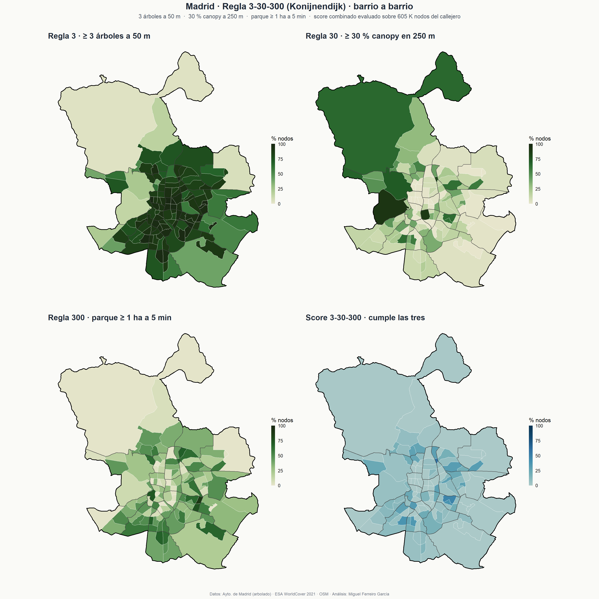

Madrid · Healthy Living Index
Análisis espacial · Madrid · 2026
Madrid Healthy Living Index
¿Es Madrid una ciudad fácil para llevar una vida saludable? ¿Y lo es igual de fácil en todos sus barrios? Cruzamos OpenStreetMap, INE, Ayuntamiento de Madrid y ESA WorldCover para construir un índice por barrio y evaluar la regla 3-30-300 de urbanismo verde. La oferta urbana saludable correlaciona negativamente con la renta. La regla 3-30-300, en cambio, borra esa correlación.
Cifras clave
131
barrios analizados
−0,26
correlación HLI ↔︎ renta neta (Pearson)
9 %
mediana de barrios que cumplen las tres reglas 3-30-300
Hallazgo principal
El HLI v1 —un índice compuesto por densidad de comida saludable, deporte, parques y fast food— correlaciona negativamente con la renta: los barrios obreros del sur (Carabanchel, Usera, Puente de Vallecas) están mejor dotados que los barrios ricos del norte (Salamanca, Chamartín, Moncloa). El dinero no compra equidad en oferta de mercados, polideportivos ni parques.
 HLI (eje Y) frente a renta neta por persona (eje X) para los 131 barrios. Cada punto es un barrio. La línea de regresión va hacia abajo: a más renta, peor HLI medio.
HLI (eje Y) frente a renta neta por persona (eje X) para los 131 barrios. Cada punto es un barrio. La línea de regresión va hacia abajo: a más renta, peor HLI medio.
| alto HLI | bajo HLI | |
|---|---|---|
| renta alta | 30 barrios | 36 barrios — trampas |
| renta baja | 36 barrios — gangas | 29 barrios |
- Top “gangas”: Comillas, Abrantes, Pradolongo, Zofío, San Isidro
- Top “trampas”: Valdemarín, Recoletos, Fuentelarreina, El Viso, Castellana
- Caso extremo: Sol — HLI 0,12, 123 fast food/km², 0 % cubierta verde
La regla 3-30-300
Cecil Konijnendijk (2021) propone un estándar simple para urbanismo verde:
3
árboles visibles desde la ventana
30 %
cubierta arbórea en el entorno (250 m)
300 m
al parque ≥ 1 ha más cercano
Hemos evaluado las tres reglas sobre 605 K nodos del callejero de Madrid: rasterización del inventario municipal de árboles (793 K) para la regla 3, ESA WorldCover 2021 a 10 m para la regla 30, e isócronas peatonales reales con dodgr para la regla 300.

Las tres reglas y el score combinado por barrio. Madrid suspende: solo el 9 % mediano de los barrios cumple las tres a la vez.Lo interesante: el score combinado borra la correlación con renta (Pearson −0,04 vs −0,26 del HLI v1). Cada componente capta una dimensión distinta y se compensan: la regla 3 (alineación viario) favorece a los barrios densos del centro; la regla 30 (canopy continuo) favorece zonas periféricas con grandes parques; la regla 300 (acceso a parque) reproduce el patrón sur-rico-mejor del HLI.
Tensión Salamanca. Castellana, Goya y Lista alcanzan el 100 % en regla 3 (alineaciones viarias densas) pero 0 % en regla 30: los árboles individuales de viario no llegan al 30 % de cubierta continua según ESA WorldCover. El estándar 3-30-300 está pensado precisamente para detectar esta diferencia entre “hay árboles” y “hay barrio verde”.
Dashboard interactivo
Explora los 131 barrios y sus 14 indicadores. Hasta 6 barrios comparados en radar, tabla descargable, scatter de equidad.
Galería de mapas estáticos
Para inspección rápida sin esperar a que arranque el dashboard:
Coroplético del HLI v1. Pulsa cada barrio para ver desglose de los 4 componentes.
Tres capas: HLI, renta neta y residual del modelo HLI ~ renta.
% de nodos con parque ≥ 1 ha a 5/10/15 minutos andando (isócronas dodgr).
Cuatro capas: regla 3, regla 30, regla 300 y score combinado.
Metodología compacta
- Capas OSM (Overpass + Geofabrik): comida saludable, gimnasios, fast food, parques. Whitelist explícita por tag tras validación visual; rescate manual de Casa de Campo (1.373 ha).
- KDE proyectado (EPSG:25830) con bandwidth de Scott — densidades en metros, no en grados.
- Agregación a 131 barrios: densidad de POIs / km² + % cubierta de parques.
- HLI compuesto: media de 4 indicadores normalizados al rango [0,1] con cuantiles 5–95 (robusto a outliers como Sol con 123 fast food/km²); fast food invertido.
- Renta: Atlas de Distribución de Renta de los Hogares 2023 del INE — agregada de sección censal a barrio por intersección espacial.
- Accesibilidad con
dodgr: red peatonal real (152 K segmentos · 605 K vértices), distancia al parque ≥1 ha más cercano, isócronas a 5 / 10 / 15 min (4,8 km/h). - Regla 3-30-300: evaluada por nodo. Regla 3 —
terra::rasterizede los 793 K árboles + focal sum en buffer 50 m. Regla 30 — ESA WorldCover 2021 v200 (10 m, clase Tree cover) + focal sum en 250 m. Regla 300 — equivale aacc_5min. Score = % nodos del barrio que cumplen las tres a la vez. - Dashboard en
shinylive(Shiny ejecutándose en el navegador como WebAssembly puro). Sin servidor.
Fuentes de datos
| Capa | Fuente | Licencia |
|---|---|---|
| POIs (gimnasios, comida, fast food, parques) | OpenStreetMap (Overpass + Geofabrik) | ODbL |
| Distritos y barrios | Ayuntamiento de Madrid · Geoportal IDEAM | CC BY 4.0 |
| Renta por sección censal | INE — ADRH 2023 (tabla 30824) | Reutilización libre |
| Cartografía secciones censales | INE — Cartografía Digitalizada 2024 | Reutilización libre |
| Arbolado urbano (793 K árboles) | datos.madrid.es · dataset 300761 | CC BY 4.0 |
| Cubierta arbórea | ESA WorldCover 2021 v200 (10 m) | CC BY 4.0 |
| Basemaps | MapTiler · CartoDB | API key / gratuito |
Sobre el proyecto
Proyecto inicialmente desarrollado en un curso de SIG con R y refactorizado en abril de 2026. 18 scripts R numerados generan toda la cadena reproducible desde descarga de datos crudos hasta los mapas, la app y este documento. El pipeline se restaura con renv::restore() y se ejecuta con un bucle sobre R/*.R.